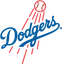

Historical player · CF
Maroth American Baseball League
- Nickname (as stored)
- Mike
- Position
- CF
- Bats/Throws
- R/L
- Major-league seasons
- 1970–1986 (17)
- Main franchise
- Houston Astros
- Status
- Retired
| Year | Team | Lg | G | PA | AB | R | H | 2B | 3B | HR | RBI | SB | CS | BB | K | AVG | OBP | SLG | OPS | WAR |
|---|---|---|---|---|---|---|---|---|---|---|---|---|---|---|---|---|---|---|---|---|
| 1970 | Houston Astros | NL | 90 | 377 | 355 | 46 | 110 | 21 | 4 | 7 | 42 | 17 | 4 | 15 | 57 | .310 | .340 | .451 | .790 | 2.3 |
| 1971 | Houston Astros | NL | 161 | 649 | 611 | 85 | 161 | 40 | 6 | 10 | 81 | 20 | 9 | 25 | 102 | .264 | .293 | .398 | .690 | 2.4 |
| 1972 | Houston Astros | NL | 139 | 625 | 559 | 103 | 179 | 39 | 8 | 22 | 82 | 55 | 21 | 56 | 62 | .320 | .385 | .537 | .921 | 8.5 |
| 1973 | Houston Astros | NL | 139 | 576 | 525 | 86 | 168 | 35 | 2 | 25 | 70 | 56 | 15 | 41 | 79 | .320 | .376 | .537 | .913 | 7.0 |
| 1974 | Houston Astros | NL | 160 | 688 | 610 | 95 | 164 | 29 | 5 | 26 | 102 | 57 | 17 | 64 | 103 | .269 | .338 | .461 | .799 | 5.6 |
| 1975 | Houston Astros | NL | 131 | 576 | 500 | 93 | 144 | 31 | 3 | 13 | 63 | 50 | 17 | 62 | 52 | .288 | .371 | .440 | .811 | 4.7 |
| 1976 | Houston Astros | NL | 150 | 635 | 575 | 89 | 171 | 26 | 5 | 18 | 83 | 58 | 15 | 55 | 51 | .297 | .357 | .454 | .811 | 6.0 |
| 1977 | Houston Astros | NL | 141 | 598 | 530 | 92 | 148 | 36 | 8 | 14 | 71 | 61 | 14 | 47 | 50 | .279 | .346 | .457 | .802 | 4.3 |
| 1978 | Houston Astros | NL | 50 | 209 | 192 | 31 | 54 | 8 | 2 | 7 | 23 | 23 | 2 | 15 | 24 | .281 | .333 | .453 | .786 | 2.0 |
| 1979 | Houston Astros | NL | 132 | 549 | 470 | 57 | 123 | 27 | 4 | 6 | 54 | 30 | 13 | 64 | 52 | .262 | .348 | .374 | .722 | 2.0 |
| 1980 | Houston Astros | NL | 137 | 569 | 499 | 71 | 154 | 32 | 8 | 10 | 73 | 48 | 15 | 66 | 72 | .309 | .389 | .465 | .854 | 5.4 |
| 1981 | Houston Astros | NL | 82 | 338 | 306 | 42 | 83 | 19 | 0 | 5 | 34 | 12 | 7 | 24 | 31 | .271 | .321 | .382 | .704 | 1.3 |
| 1982 | Cincinnati Reds | NL | 138 | 543 | 492 | 52 | 142 | 35 | 1 | 8 | 57 | 16 | 11 | 41 | 41 | .289 | .346 | .413 | .758 | 3.2 |
| 1983 | Cincinnati Reds | NL | 98 | 375 | 332 | 40 | 77 | 16 | 0 | 9 | 39 | 13 | 9 | 33 | 53 | .232 | .302 | .361 | .664 | 0.7 |
| 1984 | Cincinnati Reds | NL | 110 | 412 | 380 | 59 | 105 | 24 | 2 | 10 | 47 | 19 | 3 | 25 | 54 | .276 | .321 | .429 | .750 | 2.3 |
| 1985 | Cincinnati Reds | NL | 83 | 245 | 220 | 24 | 53 | 12 | 0 | 3 | 30 | 9 | 5 | 19 | 35 | .241 | .307 | .336 | .644 | 0.4 |
| 1985 | St. Louis Cardinals | NL | 28 | 82 | 76 | 14 | 33 | 4 | 1 | 6 | 19 | 5 | 1 | 5 | 7 | .434 | .463 | .750 | 1.213 | 1.7 |
| 1985 total | 111 | 327 | 296 | 38 | 86 | 16 | 1 | 9 | 49 | 14 | 6 | 24 | 42 | .291 | .347 | .443 | .789 | 2.1 | ||
| 1986 |  Los Angeles Dodgers | NL | 37 | 87 | 78 | 5 | 18 | 2 | 1 | 0 | 6 | 1 | 1 | 7 | 13 | .231 | .294 | .282 | .576 | -0.1 |
| Career | 17 seasons | 2006 | 8133 | 7310 | 1084 | 2087 | 436 | 60 | 199 | 976 | 550 | 179 | 664 | 938 | .285 | .347 | .443 | .790 | 59.6 |
| Year | Team | Pos | G | GS | Inn | TC | PO | A | E | DP | Fld% |
|---|---|---|---|---|---|---|---|---|---|---|---|
| 1970 | Houston Astros | CF | 75 | 75 | 656.0 | 166 | 158 | 2 | 6 | 0 | .964 |
| 1970 | Houston Astros | RF | 17 | 14 | 130.0 | 31 | 29 | 1 | 1 | 0 | .968 |
| 1971 | Houston Astros | 1B | 2 | 0 | 3.0 | 3 | 3 | 0 | 0 | 0 | 1.000 |
| 1971 | Houston Astros | LF | 12 | 8 | 79.0 | 20 | 19 | 0 | 1 | 0 | .950 |
| 1971 | Houston Astros | CF | 124 | 119 | 1077.0 | 290 | 285 | 5 | 0 | 0 | 1.000 |
| 1971 | Houston Astros | RF | 29 | 19 | 193.0 | 43 | 39 | 1 | 3 | 0 | .930 |
| 1972 | Houston Astros | CF | 137 | 136 | 1217.0 | 360 | 344 | 9 | 7 | 1 | .981 |
| 1973 | Houston Astros | CF | 136 | 135 | 1174.1 | 368 | 351 | 10 | 7 | 2 | .981 |
| 1974 | Houston Astros | CF | 157 | 157 | 1385.1 | 450 | 436 | 11 | 3 | 4 | .993 |
| 1975 | Houston Astros | CF | 131 | 131 | 1156.0 | 334 | 320 | 8 | 6 | 2 | .982 |
| 1976 | Houston Astros | CF | 146 | 145 | 1276.0 | 396 | 379 | 9 | 8 | 5 | .980 |
| 1977 | Houston Astros | CF | 137 | 136 | 1184.1 | 351 | 336 | 14 | 1 | 2 | .997 |
| 1978 | Houston Astros | CF | 50 | 50 | 433.1 | 153 | 149 | 2 | 2 | 1 | .987 |
| 1979 | Houston Astros | 1B | 91 | 89 | 789.2 | 882 | 832 | 33 | 17 | 79 | .981 |
| 1979 | Houston Astros | CF | 41 | 39 | 336.0 | 118 | 116 | 2 | 0 | 0 | 1.000 |
| 1980 | Houston Astros | CF | 136 | 136 | 1188.1 | 360 | 345 | 8 | 7 | 3 | .981 |
| 1981 | Houston Astros | 1B | 46 | 46 | 384.0 | 459 | 428 | 27 | 4 | 27 | .991 |
| 1981 | Houston Astros | CF | 34 | 34 | 299.0 | 83 | 81 | 1 | 1 | 0 | .988 |
| 1982 | Cincinnati Reds | 1B | 1 | 0 | 1.0 | 1 | 0 | 1 | 0 | 0 | 1.000 |
| 1982 | Cincinnati Reds | CF | 132 | 130 | 1151.0 | 311 | 303 | 5 | 3 | 2 | .990 |
| 1983 | Cincinnati Reds | 1B | 17 | 14 | 137.0 | 125 | 120 | 5 | 0 | 7 | 1.000 |
| 1983 | Cincinnati Reds | CF | 2 | 1 | 8.1 | 5 | 4 | 1 | 0 | 0 | 1.000 |
| 1983 | Cincinnati Reds | RF | 72 | 70 | 594.1 | 144 | 137 | 6 | 1 | 1 | .993 |
| 1984 | Cincinnati Reds | 1B | 44 | 26 | 237.0 | 233 | 215 | 14 | 4 | 16 | .983 |
| 1984 | Cincinnati Reds | LF | 52 | 48 | 405.0 | 108 | 101 | 6 | 1 | 0 | .991 |
| 1984 | Cincinnati Reds | CF | 14 | 6 | 65.0 | 21 | 20 | 0 | 1 | 0 | .952 |
| 1984 | Cincinnati Reds | RF | 19 | 9 | 99.0 | 22 | 20 | 1 | 1 | 0 | .955 |
| 1985 | Cincinnati Reds | 1B | 34 | 5 | 102.2 | 119 | 110 | 8 | 1 | 11 | .992 |
| 1985 | St. Louis Cardinals | 1B | 23 | 16 | 138.2 | 151 | 145 | 5 | 1 | 16 | .993 |
| 1985 | Cincinnati Reds | LF | 46 | 43 | 344.0 | 85 | 83 | 1 | 1 | 0 | .988 |
| 1985 | St. Louis Cardinals | LF | 1 | 0 | 3.0 | 0 | 0 | 0 | 0 | 0 | - |
| 1985 | Cincinnati Reds | CF | 4 | 3 | 26.0 | 5 | 5 | 0 | 0 | 0 | 1.000 |
| 1986 | Los Angeles Dodgers | LF | 28 | 17 | 151.1 | 32 | 29 | 2 | 1 | 0 | .969 |
| 1986 | Los Angeles Dodgers | CF | 3 | 3 | 26.0 | 5 | 4 | 0 | 1 | 0 | .800 |
| Career | CF | 1459 | 1436 | 12659.0 | 3776 | 3636 | 87 | 53 | 22 | .986 | |
| Career | 1B | 258 | 196 | 1793.0 | 1973 | 1853 | 93 | 27 | 156 | .986 | |
| Career | LF | 139 | 116 | 982.1 | 245 | 232 | 9 | 4 | 0 | .984 | |
| Career | RF | 137 | 112 | 1016.1 | 240 | 225 | 9 | 6 | 1 | .975 |
Awards
- 1972 National Gold Glove (CF)
- 1973 National Gold Glove (CF)
- 1974 National Gold Glove (CF)
- 1975 National Gold Glove (CF)
- 1976 National Gold Glove (CF)
All-Star selections 4
League-leader finishes top 10; 3 times first
| Year | League | Category | Place | Value |
|---|---|---|---|---|
| 1971 | NL | Doubles | 1st | 40 |
| 1971 | NL | Stolen bases | 10th | 20 |
| 1972 | NL | Hits | 6th | 179 |
| 1972 | NL | Total bases | 2nd | 300 |
| 1972 | NL | Doubles | 1st | 39 |
| 1972 | NL | Triples | 3rd | 8 |
| 1972 | NL | Stolen bases | 3rd | 55 |
| 1972 | NL | Runs | 5th | 103 |
| 1972 | NL | Batting average | 3rd | .320 |
| 1972 | NL | On-base % | 6th | .385 |
| 1972 | NL | Slugging % | 4th | .537 |
| 1972 | NL | OPS | 3rd | .921 |
| 1972 | NL | WAR (hitters, OOTP) | 1st | 8.5 |
| 1973 | NL | Total bases | 10th | 282 |
| 1973 | NL | Doubles | 6th | 35 |
| 1973 | NL | Stolen bases | 3rd | 56 |
| 1973 | NL | Batting average | 2nd | .320 |
| 1973 | NL | Slugging % | 4th | .537 |
| 1973 | NL | OPS | 5th | .913 |
| 1973 | NL | WAR (hitters, OOTP) | 3rd | 7.0 |
| 1974 | NL | Total bases | 6th | 281 |
| 1974 | NL | Home runs | 5th | 26 |
| 1974 | NL | Stolen bases | 4th | 57 |
| 1974 | NL | RBI | 6th | 102 |
| 1974 | NL | WAR (hitters, OOTP) | 5th | 5.6 |
| 1975 | NL | Stolen bases | 4th | 50 |
| 1975 | NL | Runs | 7th | 93 |
| 1976 | NL | Total bases | 10th | 261 |
| 1976 | NL | Stolen bases | 3rd | 58 |
| 1976 | NL | Runs | 8th | 89 |
| 1976 | NL | WAR (hitters, OOTP) | 5th | 6.0 |
| 1977 | NL | Doubles | 7th | 36 |
| 1977 | NL | Stolen bases | 2nd | 61 |
| 1980 | NL | Triples | 9th | 8 |
| 1980 | NL | Stolen bases | 8th | 48 |
| 1980 | NL | Batting average | 5th | .309 |
| 1980 | NL | On-base % | 2nd | .389 |
| 1980 | NL | OPS | 6th | .854 |
| 1980 | NL | WAR (hitters, OOTP) | 4th | 5.4 |
| 1982 | NL | Doubles | 5th | 35 |
Seasons before 2002 are real MLB history from the OOTP export, mapped by OOTP onto this league's 30 original franchises (club names are as they were in that season). 2002 is this universe. Player names are as the export stores them (apart from a few Alexander has renamed in his game since this dump, such as Babe Ruth): OOTP gives some historical players generated names (the 586-homer career is filed under “Legendre Robinson”), and the site keeps them. Every player links to a page: 2002 players to their season pages, everyone else to a historical career page.